Contents
Таsk 1
clc; close all; clear;
I = double(imread('rice.png')); figure; imshow(I, []); title('Original'); drawnow;
T = 50;
T0 = 0;
while (abs(T - T0) > 10^(-6))
g1 = double(I <= T);
g2 = double(I > T);
n = numel(I);
m1 = sum(sum(I .* g1)) / sum(sum(g1));
m2 = sum(sum(I .* g2)) / sum(sum(g2));
T0 = T;
T = (m1 + m2) / 2;
end
I = uint8(I);
I_global_threshold = im2bw(I, T / 256);
I_graythresh = im2bw(I, graythresh(I));
figure; imshow(I_global_threshold); title('Global threshold'); drawnow;
figure; imshow(I_graythresh); title('graythresh'); drawnow;
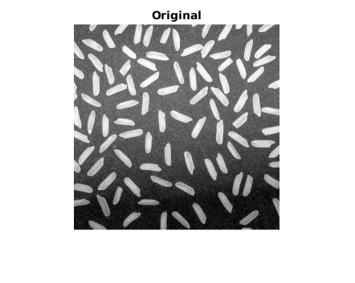 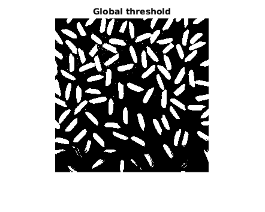 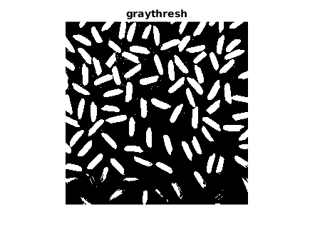
Визуально два полученных изображения практически не различаются.
Task 2
clc; close all; clear;
figure; I = imread('barbara.png'); imshow(I); title('Original'); drawnow;
f = edge(I,'canny');
[H, theta, rho] = hough(f);
peaks = houghpeaks(H, ceil(0.2 * max(H(:))));
lines = houghlines(f, theta, rho, peaks);
figure; imshow(I); title('Hough'); drawnow; hold on;
for k = 1:length(lines)
xy = [lines(k).point1; lines(k).point2];
plot(xy(:,1), xy(:,2), 'LineWidth', 2, 'Color','Blue');
end
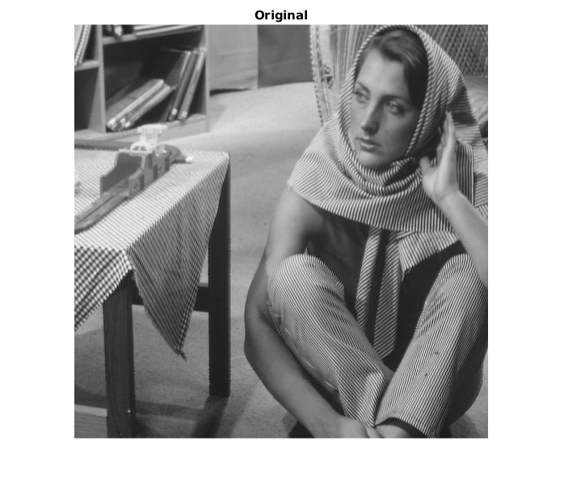 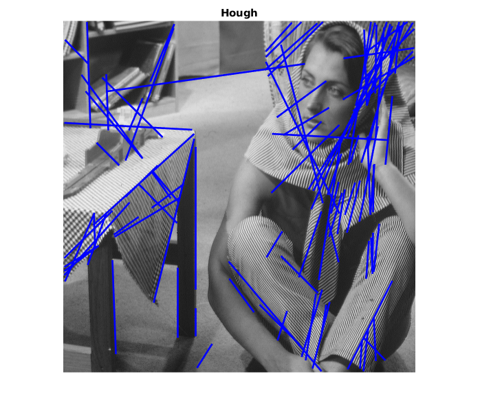
Task 3
clc; close all; clear;
I = imread('barbara.png'); figure; imshow(I); title('Original'); drawnow;
I_thresh = edge(I, 0.05); figure; imshow(I_thresh); title('Threshold'); drawnow;
I_marr = edge(I, 'log', 0.0015); figure; imshow(I_marr); title('Marr-Hildreth'); drawnow;
I_canny = edge(I, 'canny', 0.3, 0.5); figure; imshow(I_canny); title('Canny'); drawnow;
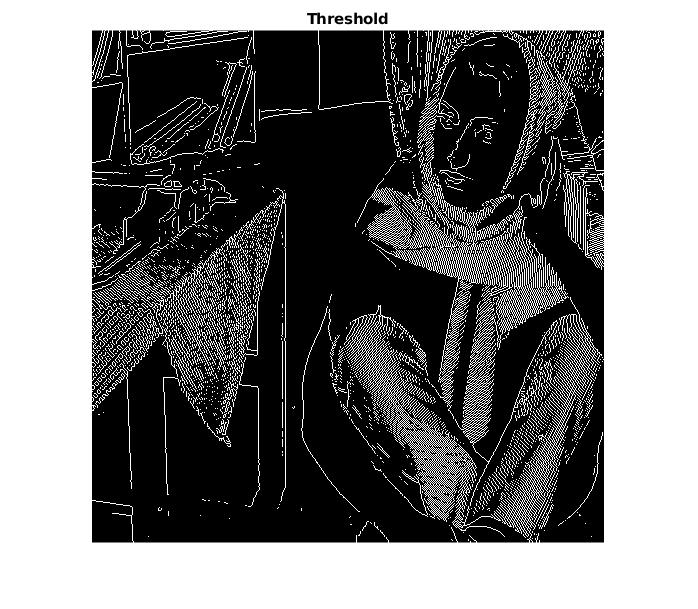 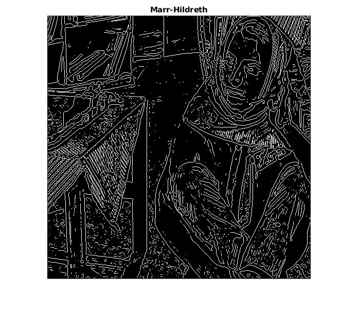 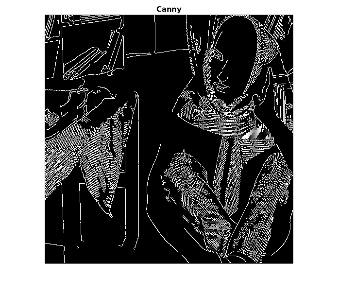
Метод Кэнни и пороговая обработка показали наиболее качественные результаты. Метод Марра-Хилдрет выделил контуры даже самые незначительные наравне с остальными.
Task 4. RGB
clc; close all; clear;
A = imread('kobi.png');
imshow(A); title('Original'); drawnow;
[L, N] = superpixels(A, 500);
figure; BW = boundarymask(L); imshow(imoverlay(A,BW,'cyan'), 'InitialMagnification',67); title('Break into superpixels'); drawnow;
outputImage = zeros(size(A),'like',A);
idx = label2idx(L);
numRows = size(A,1);
numCols = size(A,2);
for labelVal = 1:N
redIdx = idx{labelVal};
greenIdx = idx{labelVal}+numRows*numCols;
blueIdx = idx{labelVal}+2*numRows*numCols;
outputImage(redIdx) = mean(A(redIdx));
outputImage(greenIdx) = mean(A(greenIdx));
outputImage(blueIdx) = mean(A(blueIdx));
end
figure; imshow(outputImage, 'InitialMagnification', 67), title(sprintf('Superpixels N = %d', N)); drawnow;
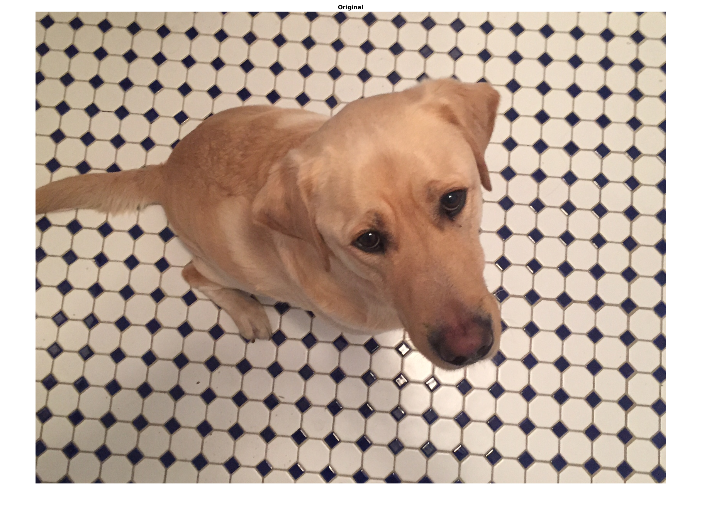 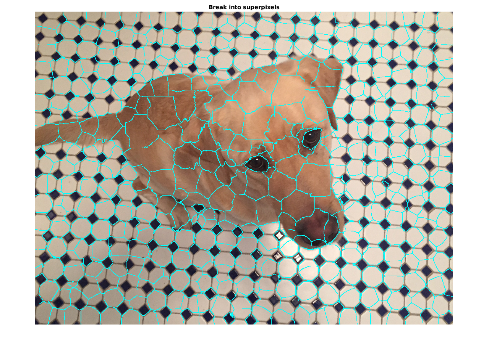 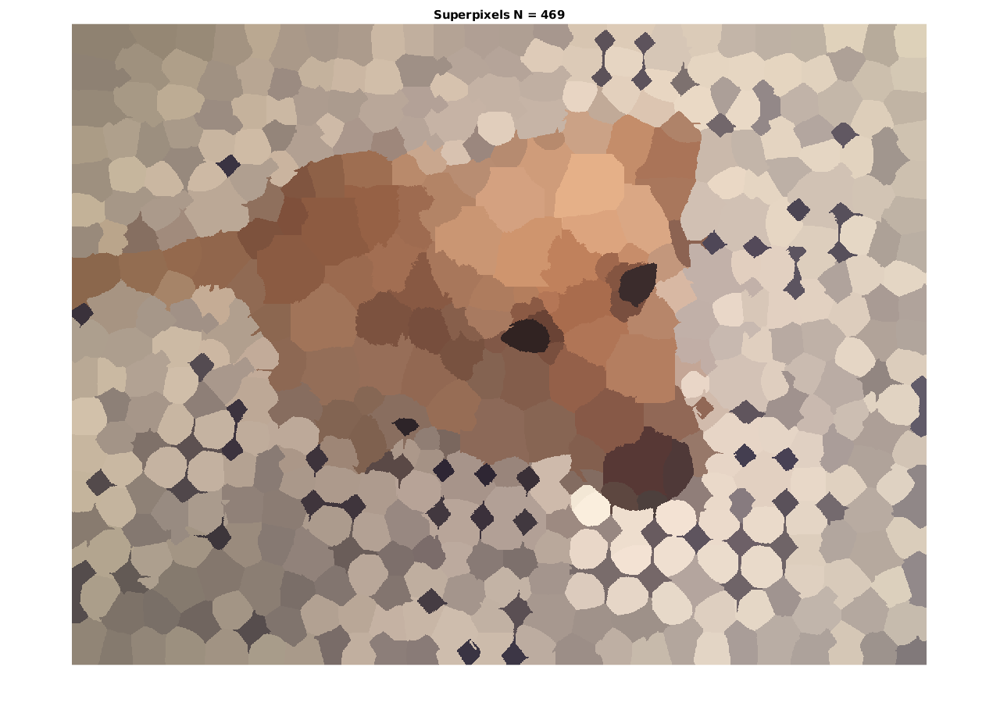
Task 4. Grayscale
clc; close all; clear;
A = rgb2gray(imread('kobi.png'));
imshow(A); title('Original'); drawnow;
[L, N] = superpixels(A, 500);
figure; BW = boundarymask(L); imshow(imoverlay(A,BW,'cyan'), 'InitialMagnification',67); title('Break into superpixels'); drawnow;
outputImage = zeros(size(A),'like',A);
idx = label2idx(L);
for labelVal = 1:N
gray_idx = idx{labelVal};
outputImage(gray_idx) = mean(A(gray_idx));
end
figure; imshow(outputImage, 'InitialMagnification', 67), title(sprintf('Superpixels N = %d', N)); drawnow;
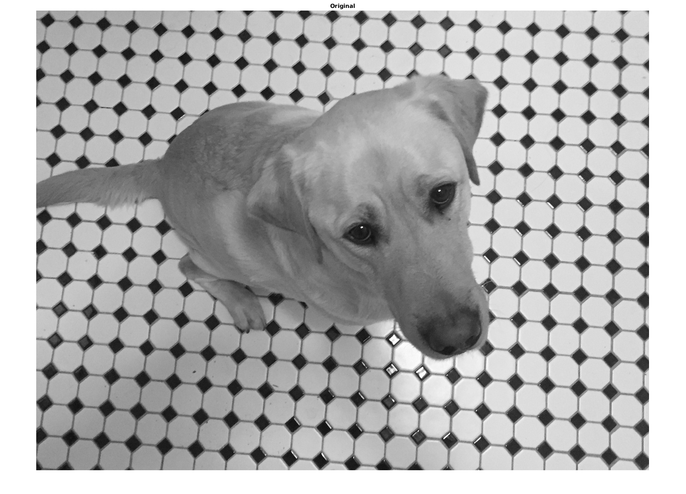 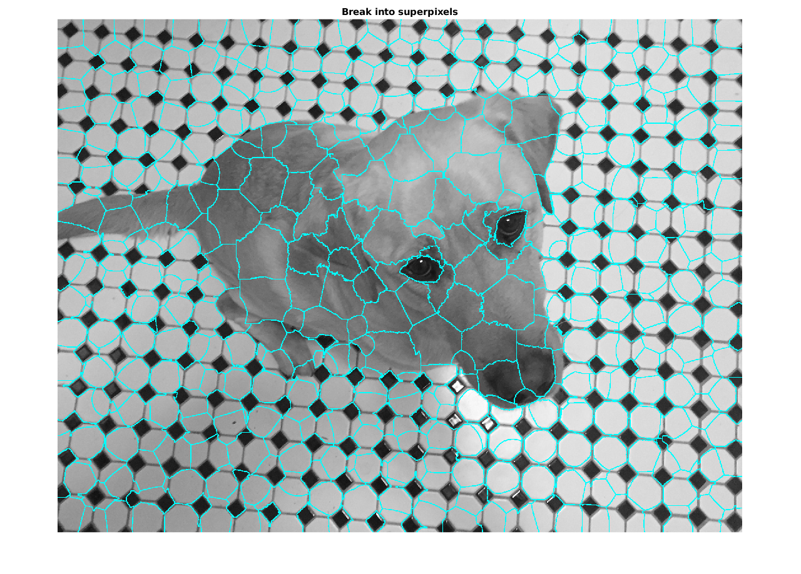 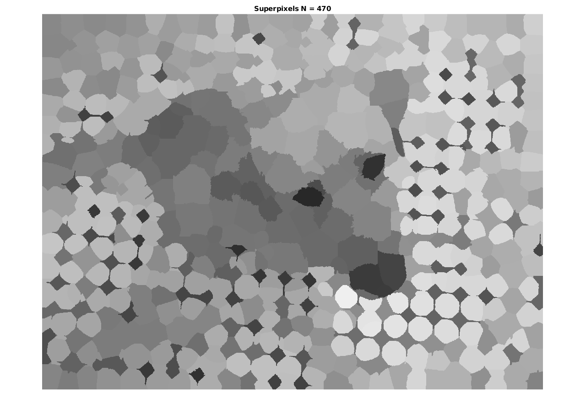
Task 5
clc; close all; clear;
d1 = 8; d2 = 7;
Im = rgb2gray(imread('kobi.png'));
H = fspecial('disk',d1);
blurred = imfilter(Im, H, 'replicate');
figure; imshow(blurred); blur = double(blurred);
h = fspecial('sobel');
g = sqrt(imfilter(blur,h,'replicate') .^ 2 + imfilter(blur,h','replicate') .^ 2);
figure; imshow(g, []); drawnow;
g2 = imclose(imopen(g, strel('disk', d2)), strel('disk', d2));
figure; imshow(g2, []); drawnow;
L = watershed(g2);
wr = L == 0;
f = Im;
f(wr) = 255;
figure; imshow(f); title(sprintf('d_1 = %d, d_2 = %d', d1, d2)); drawnow;
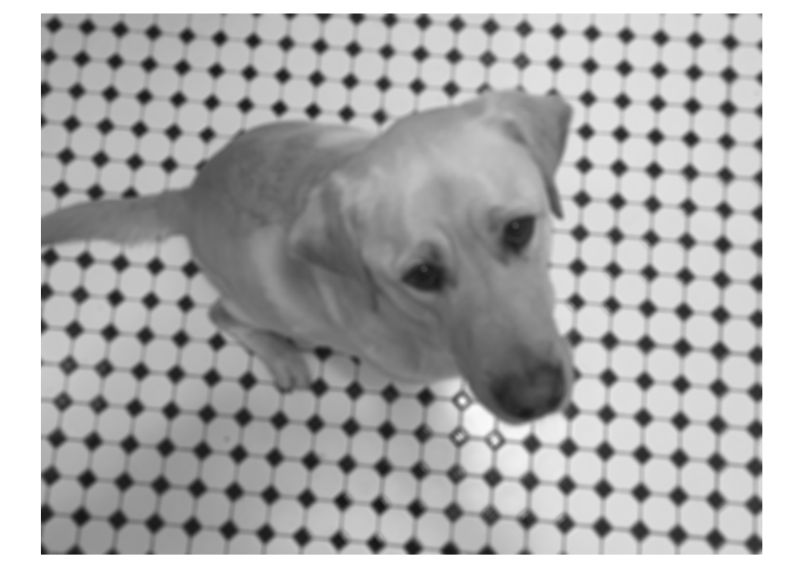 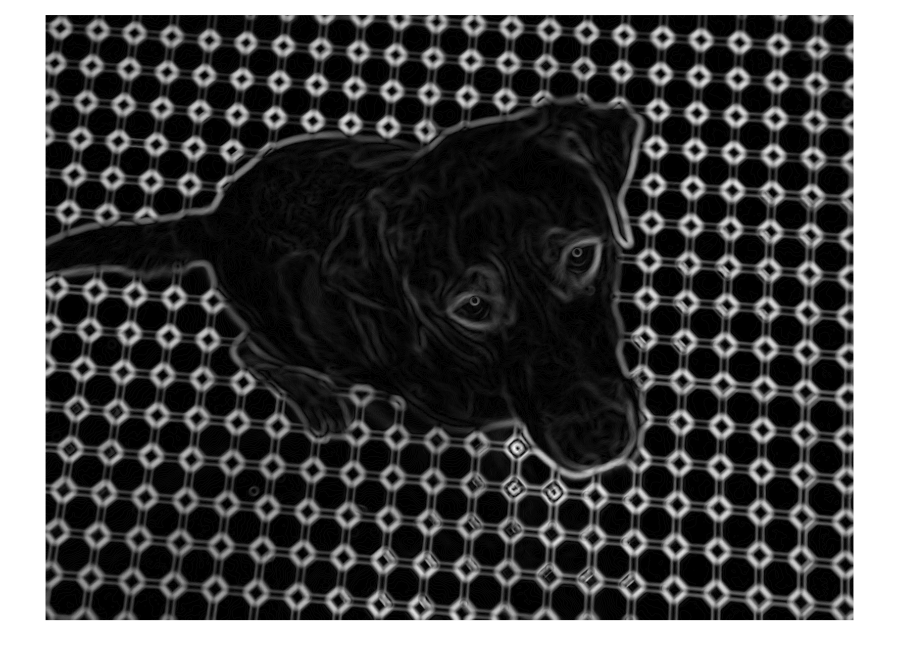 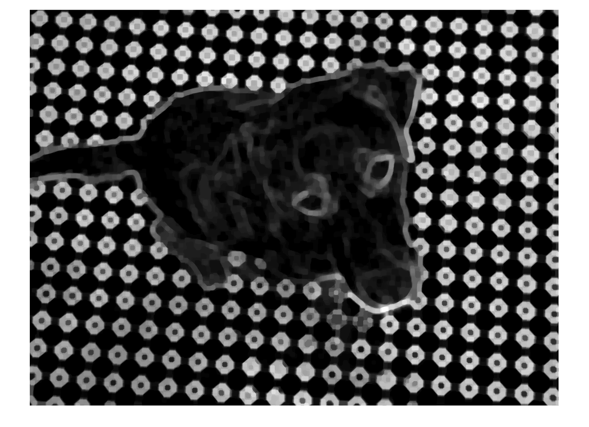 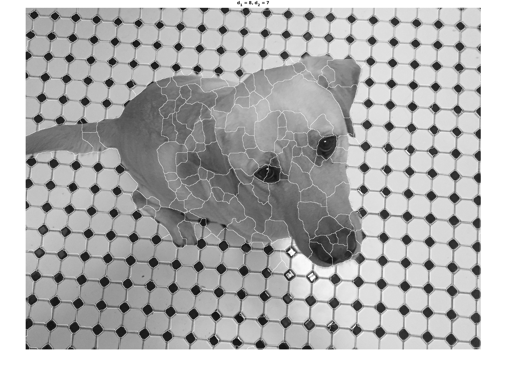